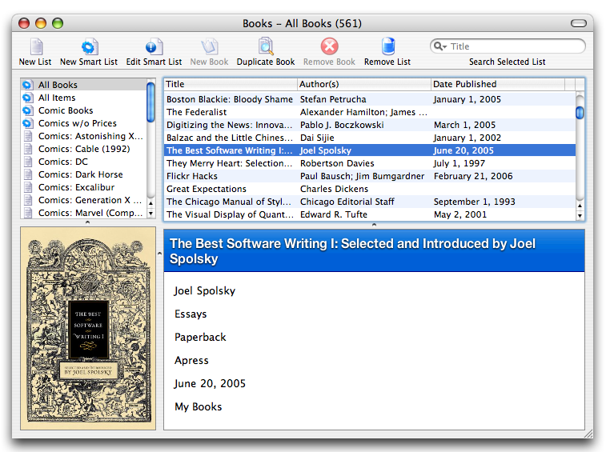

Are you new cataloging books using your computer?
If you have never cataloged your book collection using your computer, you are in for a treat.
Book cataloging has traditionally been a very tedious and time-consuming task. First, all all of the books need to be gathered in a single place and someone painstakingly goes through each book, writing down the title, authors, when it was published, and so on. Prior to computerization most professional libraries hired staff to do this and the result was the venerable card catalog.
The card catalog was better than no catalog at all, but it suffered from a few drawbacks. First of all, it was typically sorted using only a handful of fields that could describe a book. We remember that the fiction catalog was organized alphabetically by the authors' last names and the nonfiction books were organized by subject or title. This was useful if we wanted to find all of the novels published by Stephen King or all of the books about astronomy. It was not so useful for finding all of the books published by Carl Sagan or all of fiction about ghosts.
As you have no doubt noticed during your recent visit to a library, there are not many card catalogs left. Your friendly neighborhood librarian probably replaced the card catalog with a computer workstation that allows you to do things like find all of the ghost novels or list all of the Carl Sagan books on the local shelves. While something nostalgic has been lost in the transition to digital catalogs, both the librarians and patrons are better off. Patrons can more easily find the books they want and card catalog helps the librarian keep track of what books are on the shelves, who checked them out, and so on.
When you use a cataloging program such as Books, you become both the librarian and the patron. Your library consists of your books sitting on your shelves and how you choose to describe them. Think of Books as your personal card catalog. It has two goals: to help you catalog and manage your book collection, and to give you the tools for quickly locating individual books and enjoying your own personal library.

The Main Window
Books offers the following features to accomplish these goals:
Quickfill - Books can go online and retrieve information about your books with as little information as an ISBN number UPC code. Numerous companies and libraries provide book information online and Books helps you by communicating with those sources to save you from entering details or scanning covers manually.
Lists & Smart Lists - Books allows you to create any number of lists to allow you to organize your collection as you wish. Smart lists allow you to define dynamic lists using a set of simple rules that collect in one place all the books matching your criteria.
Data Exporting - You may find yourself wishing to use and share your book information when you're not in front of the computer. Books provides many options for taking your data out of the program and making it available to programs such as Excel, posting it on the web as part of your personal website, or taking it on-the-go on your iPod or mobile phone.
Did You Know?
Books appears to be a simple program for managing a small personal library, but it has been tested and works well with collections as large as ten thousand items. (That's a lot of books!) Books is designed for the personal user, but it is capable of managing the volume of a small professional library.